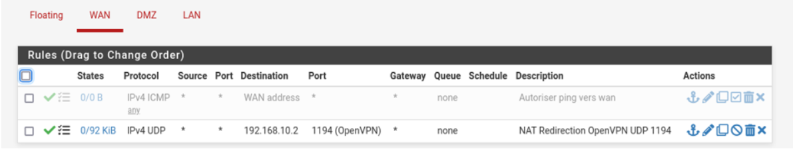
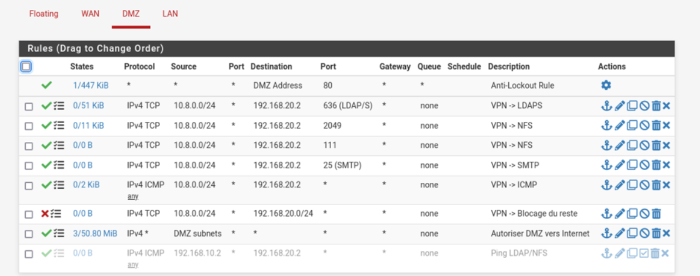
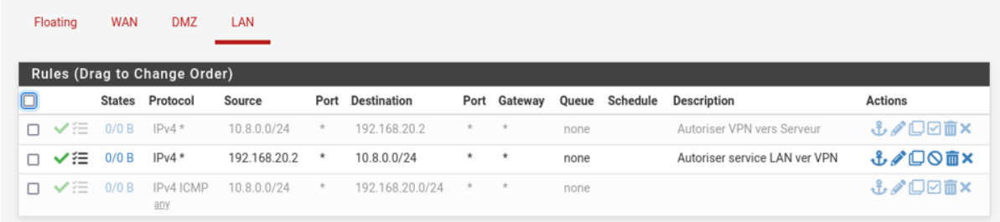

SAE 4.01 Sécuriser un système d’information
Dans cette SAE, notre objectif était de concevoir une infrastructure réseau d’entreprise sécurisée de A à Z. Ce projet combinait à la fois des compétences en administration systèmes et réseaux, en cybersécurité, ainsi qu’en gestion de services. Nous étions en groupe de deux et avions une grande liberté technique pour répondre au cahier des charges.

Accès distant sécurisé : OpenVPN
Je me suis personnellement chargé de la mise en place du serveur OpenVPN, permettant aux utilisateurs nomades de se connecter en toute sécurité à l’infrastructure via un tunnel chiffré. J’ai configuré l’accès via certificat, le routage et les filtrages spécifiques pour que le client VPN puisse accéder aux ressources internes comme LDAP et NFS.
LDAPs : Authentification centralisée
Nous avons mis en place un serveur LDAP sécurisé (port 636 + TLS). J'ai configuré l’authentification centralisée sur le client distant via PAM. J’ai créé des utilisateurs avec ldapadd à partir de fichiers LDIF, testé la connexion avec ldapsearch, et validé la connexion d’un utilisateur sur une machine distante via le VPN.
Partage de fichiers : NFS + PAM/LDAP
Pour permettre un accès centralisé aux données, nous avons partagé /home via NFS, accessible aussi bien depuis le LAN que le VPN. J’ai configuré le montage automatique via /etc/fstab, sécurisé l’accès avec root_squash, et validé l’authentification LDAP sur les clients accédant aux répertoires.
Pare-feu pfSense et Proxy Squid
J’ai participé à la configuration du pare-feu pfSense, en créant des interfaces pour chaque zone (WAN, LAN, DMZ) et en définissant les règles de filtrage. J’ai également contribué à l’installation du proxy Squid avec authentification LDAP obligatoire, testé depuis Firefox.
  DNS, Web, SMTP/IMAPs
Nous avons configuré un serveur DNS (BIND9) avec zones directe et inverse. J’ai aussi validé le bon fonctionnement du serveur web (Apache) avec HTTPS, et assisté à la mise en place du couple Postfix/Dovecot, utilisant LDAP pour l’authentification et TLS pour la sécurisation.
Conclusion
Cette SAE m’a permis de mettre en œuvre une infrastructure complexe, avec des enjeux réels de sécurité, d’interopérabilité et de performances. Ce projet m’a donné envie de continuer à me spécialiser dans les domaines de la sécurité systèmes et du déploiement de services sûrs.
R5.12 – Normes, standards et analyse de risques
Contexte du TP
Ce TP avait pour objectif de nous familiariser avec les référentiels de cybersécurité ISO 27001, ISO 27002 et NIST CSF 2.0, et surtout de comprendre comment ils sont utilisés concrètement en entreprise.
Le travail s’est fait sous forme d’analyses guidées, d’études de cas et d’exercices d’audit, afin d’aller au-delà de la théorie et d’adopter une démarche proche de celle d’un RSSI ou d’un auditeur.
Travail réalisé
J’ai d’abord mené une recherche documentaire sur les normes ISO 27001 et ISO 27002, notamment sur les 93 mesures de sécurité, afin de bien distinguer leur rôle respectif : ISO 27001 définit le cadre de management, tandis qu’ISO 27002 détaille les bonnes pratiques de mise en œuvre.
Dans un second temps, nous avons réalisé un mapping entre ISO 27001 et le NIST CSF 2.0, en reliant les clauses ISO aux fonctions NIST (Govern, Identify, Protect, Detect, Respond, Recover). Cet exercice m’a permis de comprendre les différences de logique entre une norme certifiante et un cadre orienté maturité.
Études de cas
Le TP s’appuyait sur plusieurs cas pratiques de PME (industrie, cabinet comptable et e-commerce). Pour chaque cas, nous avons identifié :
- les missions essentielles,
- les biens supports critiques,
- les événements redoutés,
- les principales sources de risque.
L’objectif était de raisonner en lien direct avec les enjeux métier et non uniquement techniques.
TP d’audit ISO 27001 (cas simulé)
Une partie du TP consistait à réaliser un audit ISO 27001 simulé, appliqué à un cabinet médical. Nous avons travaillé sur les clauses 4 à 10 de la norme, en analysant la gouvernance, la gestion des risques, la sensibilisation, les contrôles techniques et l’amélioration continue.
À l’issue de cette analyse, nous avons identifié des non-conformités, puis proposé un plan d’actions correctives, priorisé et réaliste. Cet exercice m’a permis de mieux comprendre le déroulement concret d’un audit ISO.
TP d’évaluation NIST CSF 2.0
Nous avons également réalisé une évaluation de maturité basée sur le NIST CSF 2.0 pour une PME industrielle. Le travail consistait à définir un profil actuel, un profil cible, puis à proposer une roadmap de sécurité, en tenant compte des contraintes IT/OT et des exigences réglementaires (NIS2, TISAX).
Apports du TP
Ce TP m’a permis de développer une vision globale de la cybersécurité, orientée gouvernance et gestion des risques. Il m’a appris à :
- analyser une organisation dans son ensemble,
- identifier et prioriser les risques,
- relier les normes aux réalités opérationnelles,
- formuler des recommandations compréhensibles pour la direction.
Lien du rapport : Consulter le rapport
R3.Cyber.16 Méthodologie du pentesting
Ce module a été l’un des plus marquants de ma formation, car il m’a permis de passer de la théorie à la pratique en matière de cybersécurité offensive. À travers une série de mises en situation, j’ai appris à réfléchir comme un attaquant, mais dans un cadre légal strict. L’objectif était d’explorer toutes les étapes d’un test d’intrusion : de la reconnaissance initiale à la post-exploitation, en passant par les attaques web, la persistance et l’utilisation d’outils professionnels.
Le travail s’est déroulé dans un environnement isolé, avec une machine Kali Linux en tant qu’attaquant et plusieurs machines cibles configurées volontairement vulnérables. Tout au long des exercices, j’ai documenté mes démarches, mes tests et mes résultats. Cela m’a permis de mieux comprendre non seulement les outils, mais surtout les logiques d'attaque, les erreurs fréquentes côté défense, et les bons réflexes à adopter côté sécurité.
Phase de reconnaissance : OSINT et DNS
Avant toute attaque, j’ai appris à collecter des informations publiques sur une cible, ce qu’on appelle de l’OSINT. J’ai utilisé des outils comme whois, dnsrecon, Spiderfoot et TheHarvester pour cartographier l’environnement réseau d’une organisation. Ce travail m’a montré à quel point les données exposées publiquement peuvent déjà suffire à établir un plan d’attaque crédible.
Casser des mots de passe : dictionnaires, règles et patience
J’ai ensuite exploré les attaques par force brute, en générant mes propres dictionnaires avec crunch ou cewl, parfois à partir du contenu d’un site ciblé. J’ai utilisé hydra pour attaquer un service SSH, et john the ripper pour casser des empreintes récupérées sur un système Linux. Ce qui m’a marqué, c’est le rôle essentiel des règles de transformation, qui permettent de tester des variantes réalistes d’un mot de passe humain.
Metasploit : exploitation et reverse shell
Travailler avec Metasploit m’a permis d’enchaîner les phases d’un pentest complet : scan réseau, exploitation de vulnérabilités, ouverture de sessions, et extraction d'informations. J’ai appris à utiliser des modules comme smb_login, scanner/ssh, et à générer des payloads personnalisés avec msfvenom. Un moment marquant a été la réussite d’un reverse shell vers ma machine Kali, avec contrôle complet sur la machine cible.
Maintenir l’accès : persistance et élévation de privilèges
Une autre partie très instructive a été la mise en place d’un accès persistant. Après avoir obtenu un shell sur une machine cible, j’ai utilisé un script de sauvegarde mal protégé pour injecter une ligne de commande netcat, créant ainsi un point d’accès discret. Ensuite, avec Metasploit, j’ai mis en place un service de backdoor qui relance automatiquement une session même après redémarrage. Cette étape m’a montré à quel point un mauvais contrôle des droits d’exécution peut compromettre un système durablement.
Pentest Web : SQL Injection et attaques sur formulaire
Enfin, j’ai découvert les outils dédiés aux applications web. Avec sqlmap, j’ai pu extraire les bases de données d’un site vulnérable via injection SQL, en quelques lignes de commande. J’ai aussi utilisé BurpSuite, un proxy HTTP qui permet d’intercepter, modifier et rejouer des requêtes. Grâce à son outil Intruder, j’ai mené une attaque bruteforce sur une interface de connexion en testant des milliers de combinaisons.
Ce que ce module m’a appris
Ce module m’a permis d’approcher la cybersécurité de manière concrète. Au-delà des outils, j’ai appris à raisonner, à documenter mes démarches et à analyser les résultats avec recul. Cela m’a aussi permis de comprendre les limites de certaines sécurités trop basiques, et l'importance de la défense en profondeur. J’ai pris goût à l’audit et à l’analyse, et cela a confirmé mon intérêt pour les métiers liés à la sécurité offensive et défensive.